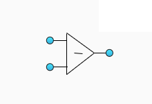

UserCodeBlock
ExternalInputPort
ExternalOutputPort
GraphLang ClusterDatatype
GraphLang Array
GraphLang NumericConstant
GraphLang BundleByName
GraphLang UnbundleByName
GL Add
GL Subtract
GL Loop
PropertyNode
InvokeNode
Arduino Add

Arduino Subtract
Arduino digitalWrite
Arduino digitalRead
Arduino waitUntilNextMs
WhileLoop
ForLoop
Multilayered
Arduino Math.Abs
Arduino pinMode
Arduino Serial.begin
Arduino Serial.println
Arduino Multiply
Arduino Divide
Arduino analogRead
Arduino analogWrite
Arduino toStr
GraphLang Constant String
GraphLang Constant int32
GraphLang Constant bool
GraphLang Constant float
Arduino StringReplace
 Arduino ternarOperator
Arduino ternarOperator
Arduino LJ42
Arduino Nano
GraphLang FeedbackNode